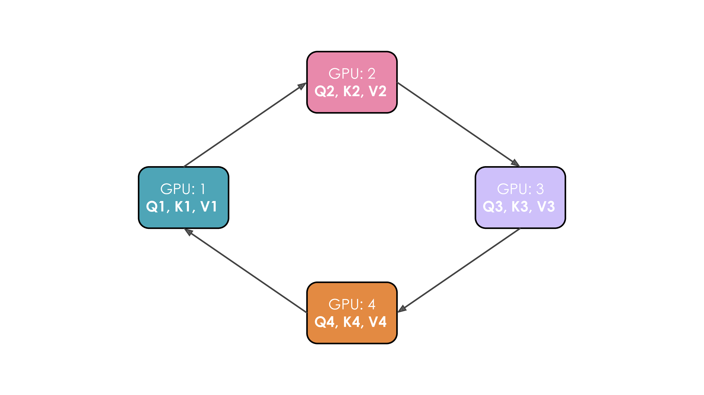
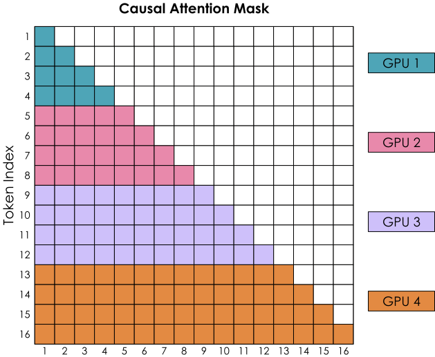
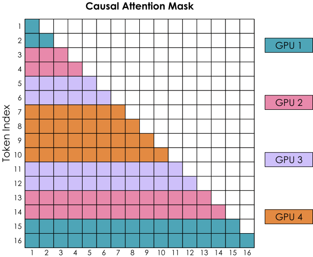
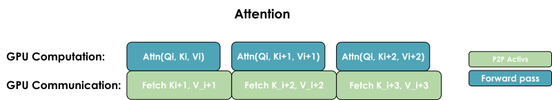

Context Parallelism¶
Context Parallelism¶
With tensor parallelism + sequence parallelism, we can reduce the memory requirements per GPU significantly as both model weights and activations are distributed across GPUs. However, when training models on longer and longer sequences (e.g., when scaling to 128k or more tokens per sequence), we might still exceed the memory available on a single node as we still have to process a full sequence when we're inside the TP region.
Moreover, even if we use full recomputation of the activations (which incurs a heavy compute overhead of ~30%), we still need to hold in memory some activations at the layer boundaries, which scale linearly with sequence length. Let's take a look and see how context parallelism (CP) can help us:
Open full interactive visualization: Cp 8Bmemoryusage
The core idea of context parallelism is similar to sequence parallelism (i.e., splitting along the sequence length), but this approach is applied to the modules where we already apply tensor parallelism. We will thus split these modules along two dimensions, thereby also reducing the effect of sequence length. You should find this approach quite intuitive after all we’ve already covered, but there's a trick to it, so stay awake!
With context parallelism, just like sequence parallelism, we split the input along the sequence dimension - but we now apply this splitting along the full model, instead of only the sequence-parallel regions of the model, as we did previously with TP+SP.
Splitting the sequence doesn't affect most modules, like MLP and LayerNorm, where each token is processed independently. It also doesn’t require expensive communication like TP, as only the inputs are split, not the weight matrices. Just like with data parallelism, after computing the gradients, an all-reduce operation is initiated to synchronize the gradients across the CP group.
There is one important exception, though: we need to pay particular attention to the attention blocks (haha... pun intended :D). In the attention module, each token needs to access key/value pairs from all other sequence tokens (or, in the case of causal attention, at least attend to each previous token).
Because context parallelism splits the inputs along the sequence dimension across GPUs, the attention module will require full communication between GPUs to exchange the necessary key/value data.
That sounds very expensive if we do it naively. Is there a way to do it more cheaply, and fast? Thankfully, there is a core technique that enables us to handle this communication of key/value pairs efficiently: Ring Attention.
📝 Note
Context parallelism shares some conceptual similarities with FlashAttention, which we'll look at later in the book - both techniques rely on online softmax computation to reduce memory usage. But while FlashAttention focuses on optimizing the attention computation itself on a single GPU, context parallelism achieves memory reduction by distributing the sequence across multiple GPUs.
Ring Attention¶
In this implementation of the attention mechanism, each GPU first initiates an asynchronous communication operation to send its key/value pairs to other GPUs. While waiting for the other GPUs' data, it computes the attention score for the portion of the data it already has in memory. Ideally, the next key/value pair is received from another GPU before this computation finishes, allowing the GPU to start the next round of computation immediately after it finishes its first computation.
Let's illustrate this. We'll suppose we have four GPUs and an input of four tokens. Initially, the input sequence is split evenly along the sequence dimension, so each GPU will have just one token along with its corresponding Q/K/V values. Let's say Q1, K1, and V1 represent the query, key, and value of the first token, which are located on the first GPU. The attention calculation will take four time steps to complete. At each time step, each GPU performs these three successive operations:
- Send current keys and values to the next machine (in all but the last time step) in a non-blocking manner, so we can start the following operation before this one is finished.
- Locally compute the attention score on the current keys and values, which typically involves performing \(Softmax(\frac{QK^T}{\sqrt{d}}) * V\).
- Wait to receive keys and values from the previous GPU, and then circle back to step 1, where the current keys and values are now the key/values just received.
We perform these three steps four times to complete the attention calculation.
The whole process with four GPUs is shown in the following animation:

It's probably obvious to you from this animation why the authors chose to call this approach Ring Attention[]!
There is one big problem, though, which is that a naive implementation of Ring Attention leads to some strong imbalances between GPUs due to the shape of the causal attention matrix. Let’s take a look at the softmax computation by considering the attention score matrix with the causal attention mask:

The softmax is computed row-wise, which means whenever a GPU has received all the tokens of a row, it can be computed. We see that GPU 1 can immediately compute it, as it starts with tokens 1-4 and doesn’t need to receive any information from any other GPUs. However, GPU 2 will need to wait for the second round to receive tokens 1-4 and thus have all the values for tokens 1-8. GPU 1 also seems to perform much less work than all the other GPUs.
Let’s see if we can balance our computations better.
Zig-Zag Ring Attention – A balanced compute implementation¶
We need a better way to distribute the input sequences. This can be achieved by not assigning the tokens to the GPUs in a purely sequential manner, but instead mixing up the ordering a bit such that we have a good mix of early and late tokens on each GPU. This approach is called Zig-Zag Attention. In this new arrangement, the attention mask will show an even distribution of computation, but if you count the number of colored squares, you'll see that the computation is now balanced across all GPUs.
We show here Zig-Zag Attention, which slightly differs from Striped Attention[]. For details on the differences, check this GitHub discussion.

You’ll also see that in order to complete all rows, each GPU will need information from all the other GPUs.
We have two general ways to overlap computation and communication: either by performing a general all-gather, regrouping all the keys and values on each GPU at the same time (in a ZeRO-3 type of way), or by gathering them from each GPU on each GPU as needed.

The key differences between these two implementations lie in their communication patterns and memory usage:
1. All-gather implementation:
- All GPUs simultaneously gather the complete key/value pairs from all other GPUs.
- Requires more temporary memory as each GPU needs to store all the K/V pairs at once.
- Communication happens in one step but with larger memory overhead.
2. All-to-all (ring) implementation:
- GPUs exchange K/V pairs in a ring-like pattern, one chunk at a time.
- More memory-efficient, as each GPU only needs to store one additional chunk temporarily.
- Communication is spread out and overlapped with computation, though with some additional base latency overhead from multiple communication steps.
The all-to-all approach generally offers better memory efficiency at the cost of a slightly more complex communication pattern, while the all-gather approach is simpler but requires more temporary memory during the attention computation.
We've now seen how we can split a model across one node with TP to tame large models and that we can use CP to tame the activation explosion with long sequences.
However, we still know that TP doesn't scale well across nodes, so what can we do if the model weights don't easily fit on one node? Pipeline parallelism - our fourth degree of parallelism - to the rescue!